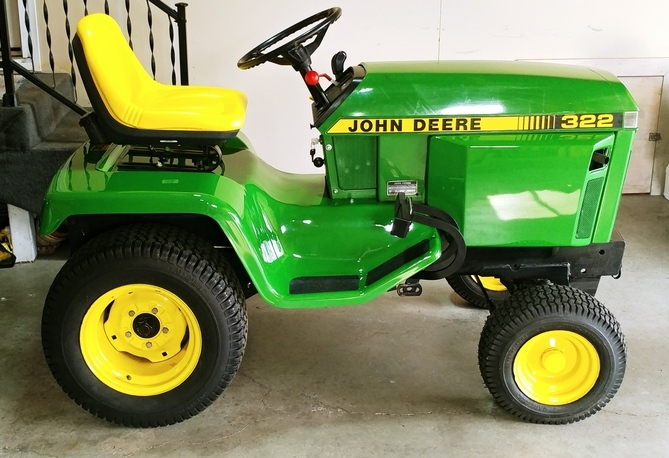
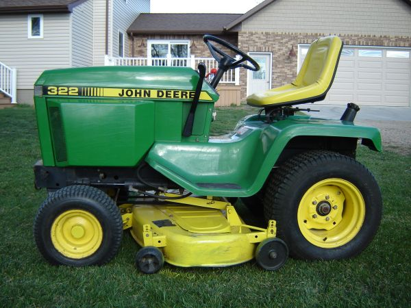
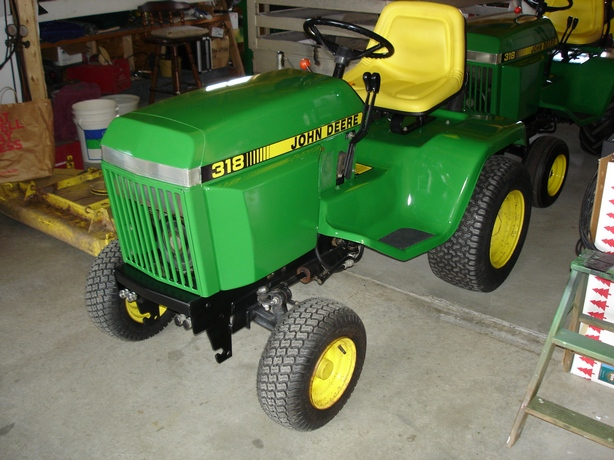

Here are a few of the older John Deere lawn tractors I have refurbed!

This is the last John Deere I restored, it is a 322 3cyl Yanmar.
The gentleman I bought it from took it to get the front clutch replaced.
Somehow in the process, the wiring got messed up, and they never got it running again.
It took me a couple days to get it figured out, but it sure is a nice running 322 now:)
I then repainted it and replaced whatever was necessary.

This was the first 322 I had, a very nice original 1994 322.
The 322 has a liquid cooled 3 cyl. Yanmar
engine. This one had only 1000 hrs on it,
and ran very nice. It looked quite nice, so I did not plan on repainting it. I did however replace the seat.
It is pictured as it was when I bought it. That is the original John Deere color. This is not the 322 pictured above.


This is the second 318 I restored,I usually go thru and replace,
rebuild, or repair whatever is needed. I was fortunate to find a low hr P218, for this great little tractor. It had
the deep 50" deck, and a 49 snowthrower when it left here. The new owner is very pleased with it.That is a 420 pictured behind it.
 This was my favorite,
a 1986 420. It has a 50" mower deck, and a model 46 snowthrower. I was lucky to locate a 54" 4 way blade that I extended 6 inches on each side (what a work horse). I have also fabricated
a new 3pt. hitch for it.
This was my favorite,
a 1986 420. It has a 50" mower deck, and a model 46 snowthrower. I was lucky to locate a 54" 4 way blade that I extended 6 inches on each side (what a work horse). I have also fabricated
a new 3pt. hitch for it.
Home